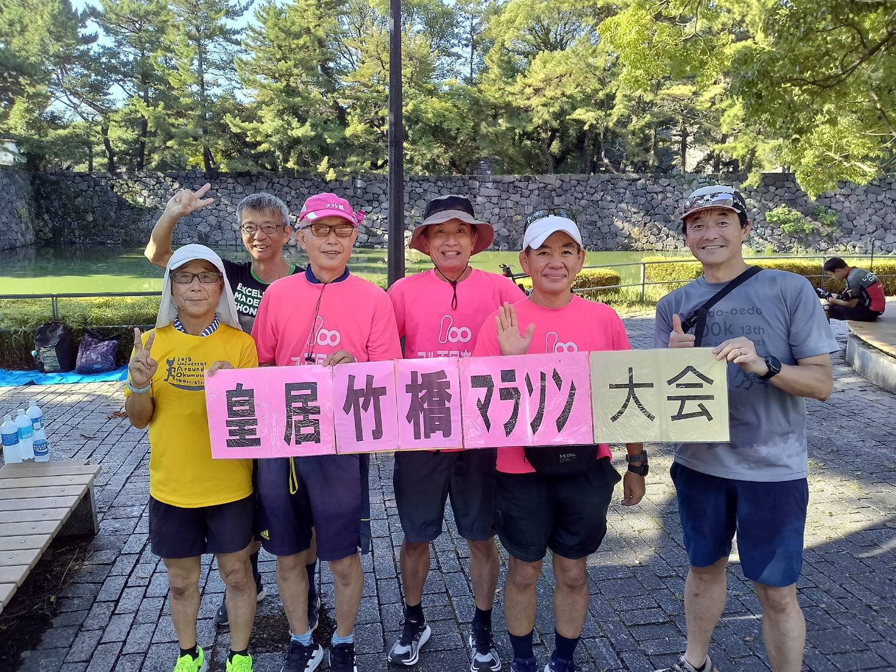

2025-09-06 04:34:34
2025年(令和7年）9月6日（土）晴れ22～33℃
| 順位 | 会員No. | 氏名 | 種目 | タイム |
|---|---|---|---|---|
| 1 | 230 | 大沼慎也 | フル | 4:56:59 |
| 2 | 267 | 小川哲司 | フル | 5:53:06 |
| 3 | 129 | 中家和宏 | フル | 6:11:00 |
| 4 | 208 | 盛井恒男 | フル | 6:22:56 |
| 5 | 258 | 池尻 彰 | フル | 6:24:48 |
| 6 | 231 | 北田明生 | フル | 6:28:39 |
| 7 | 105 | 宮野 繁 | フル | 10:13:01 |
| 8 | 013 | 住川万里子 | 10㎞ | 2:00:00 |
マラソン終了後有志で四周年記念祝賀会開催。
